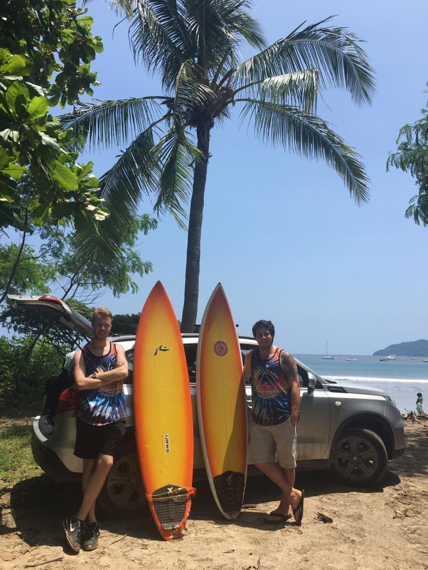

A few years after my affair with Maggie the Moped, I found myself interested in more entrepreneurial pursuits. At a young age, I realized traveling to cultures vastly different from my own could be incredibly formative and eye-opening. I learned about an organization called Workaway, which allowed young, broke travelers to find host sites across the globe. In exchange for a few hours of work each day, you could live for free at a coffee farm in Guatemala or a hostel in Spain. I attempted to use this model to start my own organization, BeyondSTL, which would take local St. Louis city high school students on an international immersive cultural experience.
The 19-year-old me went so far as visiting and vetting host sites in Costa Rica, Guatemala, and Belize! The first stop was the Dreamsea Surf Camp, a communal camp tucked in the jungles on the Nicoya Peninsula of Costa Rica. Unfortunately, BeyondSTL never fully materialized, but at least my close friend Robbie and I got to learn how to shred some waves in the process.